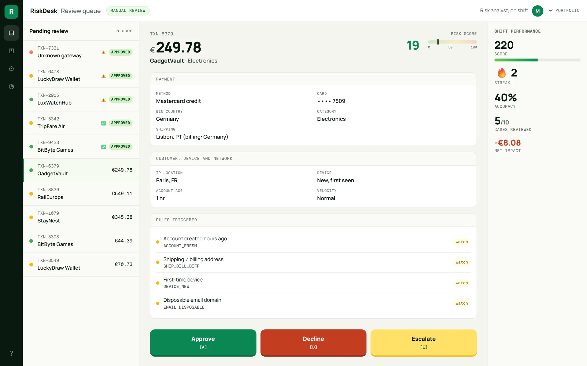

A payments risk desk where the model’s score is sometimes wrong
You work through a shift of flagged card payments and decide for each one whether to approve it, decline it or send the customer to an extra check, while a running total shows what every decision has cost the business.
New risk analysts tend to trust the model’s score more than the signals under it. In two of the eight kinds of case the score points the wrong way, and the feedback on those cases names the signals that would have caught it.